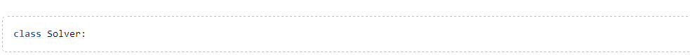
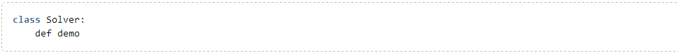
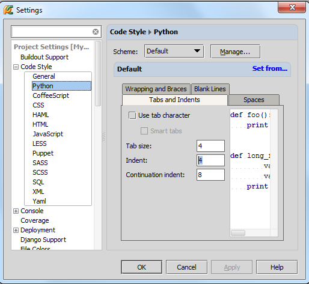
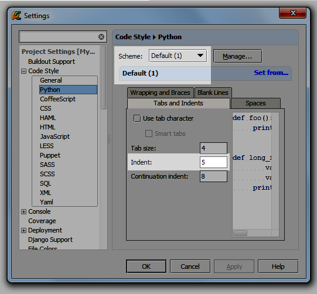
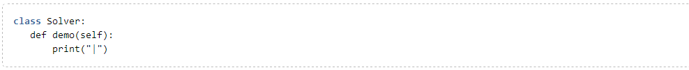
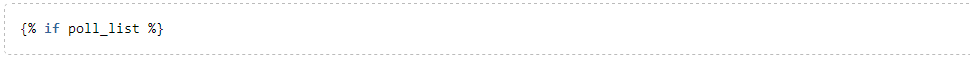
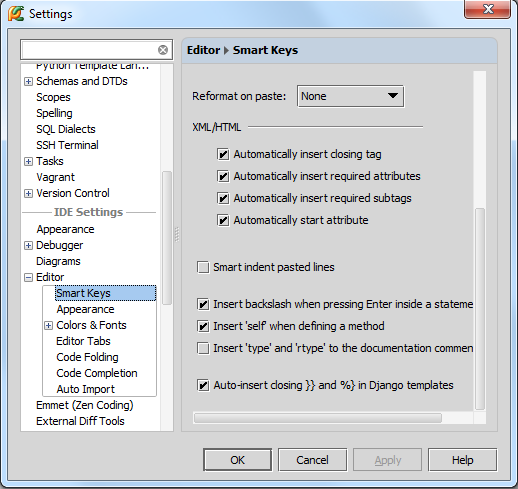

最全Pycharm教程（4）——有关Python解释器的相关配置
最全Pycharm教程（6）——将Pycharm作为Vim编辑器使用
最全Pycharm教程（8）——Django工程的创建和管理
最全Pycharm教程（9）——创建并运行一个基本的Python测试程序
最全Pycharm教程（11）——Pycharm调试器之断点篇
最全Pycharm教程（12）——Pycharm调试器之Java脚本调试
最全Pycharm教程（14）——Pycharm编辑器功能总篇
1、主题
之前已经介绍过，Pycharm具有强大的拼写提示功能，包括 basic 和 smart type，除此之外Pycharm还能自动生成一些结构化代码，插入成对的花括号和引号，接下来我们一探究竟。
2、自动缩进
键入类声明，然后回车：

Pycharm光标会自动预留缩进，此处可以开始输入函数声明：

此时自动缩进的机制已经启动。这里函数声明（以及所有的嵌套操作）默认从左边缩进了4个空格位置。这里的缩进规则涉及了Python相对固定的代码风格标准，并且这个标准是根据你的团队定制的（即一个公司需要遵循统一标准），指定好标准后，Pycharm会帮助我们按照标准来维护代码风格。接下来我们介绍Pycharm具体是如何实现这个功能的。同样以这段简单的代码为例，打开设置对话框，展开Code Style节点，打开 Python页（Ctrl+Alt+S→Project Settings→Code Style →Python）：

如你所见，这里规定的缩进尺寸为4个空格，Pycharm按照这个规则来进行代码的自动生成以及格式检查reformatting。当然我们更改缩进规则（就和修改其他代码规则一样）。假设你希望缩进个数为5个空格，即生成的所有新的代码相对于上层代码的缩进个数均为5个空格。浏览Smart Keys页面获得更详细的信息。
然而Pycharm预设的代码风格框架是不可更改的，在进行私人订制之前Pycharm会自动拷贝一份，拷贝的副本供我们修改：

这份新的配置框架保存在你用户目录下，有必要的话你可以与其他队友分享，方便整个团队代码的风格统一。更多有关代码风格设置的信息详见 Project and IDE Settings。
3、语法自动补全
当你输入一个圆括号时（Pycharm会试图补全另一半），Pycharm会补全系统参数self。回车之后光标会移动到下一个输入位置（根据当前制定的缩进规则），在此处输入需要打印的信息，输入一个圆括号，Pycharm会自动补全另一半括号，并将光标至于括号内部以供我们输入待打印的信息：

接下来我们测试一个更复杂的情况——编辑一个Django模板。对于语法非常复杂的Django模板，语法自动补全功能就显得至关重要。OK，开始输入一个Django标签
一旦你键入一个花括号，Pycharm就会自动补全另外一个：
并且光标会停在两个%之间，方便我们输入代码：

类似的，对于{{标志Pycharm同样会自动补全另外一半。
语法自动补全功能的相关设置位于编辑器设置的Smart Keys页面：Ctrl+Alt+S→IDE Settings→Editor→Smart Keys:

举个例子，如果希望Pycharm能够自动补全圆括号、方括号等，需要勾选Insert pair bracket复选框；要想自动补全引号则需要勾选Insert pair quote复选框。对于Django模板，有一个专门的复选框Auto-insert closing }} and %} in Django templates以供选择。